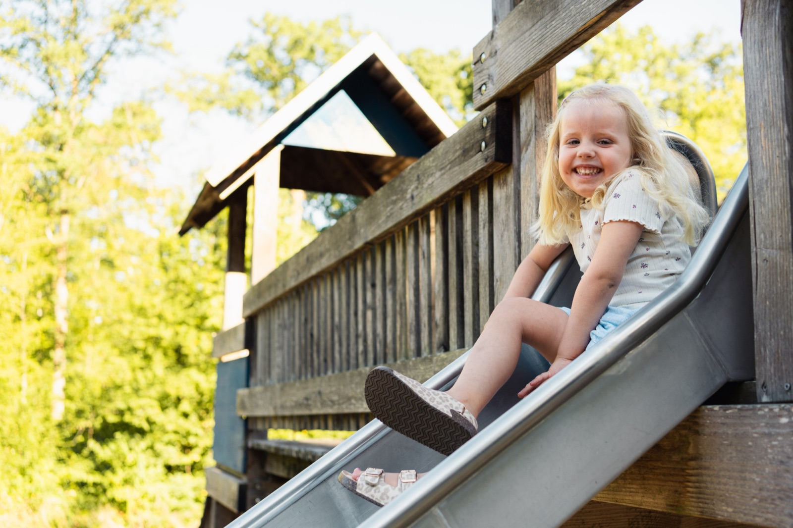
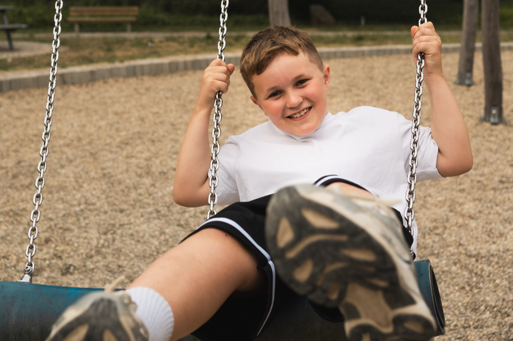
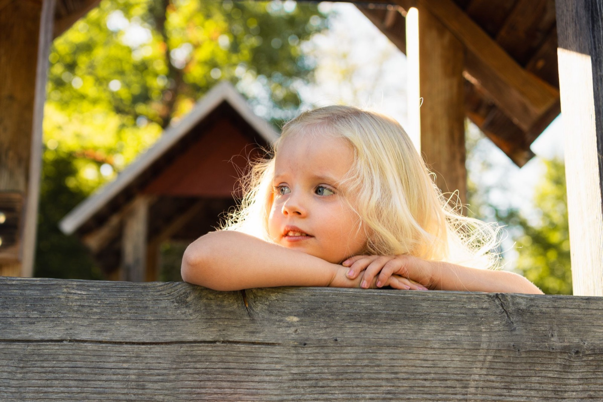

Kitafotografie in Göppingen und Umgebung
Natürliche Aufnahmen beim freien Spielen statt gestellter Studiobilder. Für Ihre Einrichtung kostenlos und ohne Mehraufwand für Ihr Team.



So läuft es ab
Kurze Terminabsprache. Von Ihrer Seite braucht es nur einen Platz im Freien, um alles Weitere kümmere ich mich.
Ein bis zwei Stunden pro Gruppe, im freien Spiel, der Tagesablauf bleibt wie immer. Das Gruppenbild bekommt jedes Kind digital geschenkt.
Jedes Kind bekommt eine passwortgeschützte Online-Galerie. Eltern wählen und bestellen selbst, online.
Ihr Nutzen
Kosten für Ihre Einrichtung
0 €
Eltern kaufen freiwillig: Einzelbilder ab 5,90 €, Pakete ab 24,90 €. Keine Buchungsgebühr für die Kita, keine Bestellverpflichtung für Familien.
Datenschutz
Galerien und Bestellungen laufen DSGVO-konform über Fotograf.de mit Servern in Deutschland.
Fotografiert wird ausschließlich mit vorliegender Einwilligung der Erziehungsberechtigten.
Ein erweitertes Führungszeugnis liegt vor und wird auf Wunsch vorgelegt.
Marius Jakob · Bruderjakob Kitafotografie · 73084 Salach